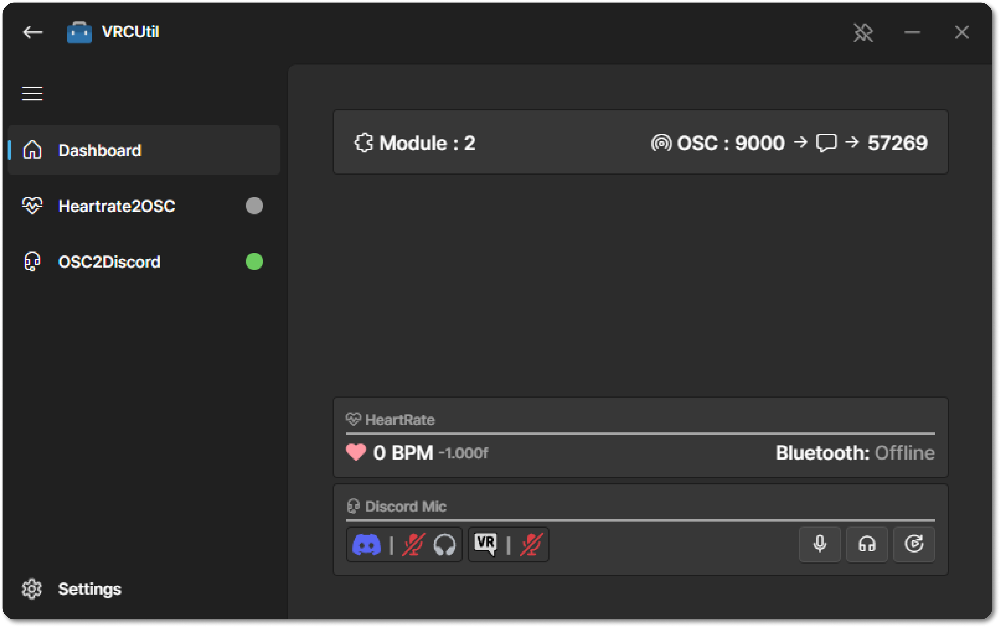

Python에서 간편하게 만드는 WinUI 스타일 UI
PyWebWinUI3는 Python 프로그램에 Windows용 GUI를 붙이기 위한 프레임워크입니다. 화면은 XAML과 비슷한 형식으로 작성하고, 상태와 이벤트는 Python 코드에서 처리합니다.
창은 pywebview가 열고 내부 UI는 Edge WebView2에서 Svelte로 렌더링됩니다. 시스템 테마와 강조색을 따라가며, 제목 표시줄과 창 동작도 Windows 앱에 맞게 처리합니다.
빌드된 프런트엔드가 패키지에 포함되어 있으므로 앱을 만드는 쪽에서는 Node.js나 Svelte 프로젝트를 따로 설정할 필요가 없습니다.
어디에 쓰기 좋나요
- 옵션이 많은 Python 프로그램의 설정 화면
- 진행률, 상태, 로그를 보여주는 대시보드
- 파일 처리나 데이터 변환 같은 업무용 도구
- Python으로 만든 기능에 GUI를 붙여 보는 프로토타입
실제 구성은 저장소의 example/ 폴더에 있는 Python 코드와 Dashboard, Settings, Test XAML 페이지에서 확인할 수 있습니다.
주요 기능
- XAML 페이지 화면 구조는
Page,Box,Horizontal,Button같은 태그로 작성합니다. app.valuesPython에서 넣은 값을{user_name}처럼 표시하고, Input이나 Switch에서 바뀐 값도 다시 받을 수 있습니다.- 이벤트 값 변경, 앱 준비, 창 닫기, 종료와 강조색 변경을 데코레이터로 처리합니다.
- 메시지와 알림 Python과 프런트엔드가 메시지를 주고받을 수 있고,
notice()로 상태 알림을 표시할 수 있습니다. - 창 제어 최소화, 최대화, 복원, 항상 위 고정과 최소화 시작을 지원합니다.
- Windows 테마 연동 시스템의 라이트·다크 모드와 강조색 변경을 UI에 반영합니다.
컴포넌트
현재 XAML 페이지에서 사용할 수 있는 태그는 다음과 같습니다.
페이지와 레이아웃: Page, Box, Horizontal, Vertical, Space, Line, Expender
텍스트와 입력: Text, Button, Input, Slider, Switch, Check, Radio, Select, Option
콘텐츠와 상태: Image, Webview, Progressbar
조건과 반복: If, Match, Repeat *
* If와 Match는 상태에 따라 다른 자식 요소를 보여주고, Repeat는 지정한 데이터나 횟수에 맞춰 자식 요소를 반복해서 렌더링합니다.
설치와 기본 예제
- Windows에서 Python 3.10 이상을 준비합니다.
pip install PyWebWinUI3로 패키지를 설치합니다.MainWindow를 만들고addPage()또는addSettings()로 XAML 파일을 등록합니다.- 필요한 값과 이벤트를 연결한 뒤
app.start()를 호출합니다.
아래 예제는 작업 이름과 진행률을 표시하고, 버튼을 누르면 Python에서 값을 바꾼 뒤 완료 알림을 띄웁니다.
Python 예제
from pywebwinui3.core import MainWindow
from pywebwinui3.type import Status
app = MainWindow("작업 관리자")
app.addPage("Dashboard.xaml")
app.values["task_name"] = "이미지 변환"
app.values["progress"] = 35
app.values["auto_start"] = False
@app.onValueChange("run_task")
def run_task(*_):
app.values["progress"] = 100
app.notice(Status.Success, "작업 완료", "이미지 변환이 끝났습니다.")
app.start()Dashboard.xaml 예제
<Page path="" icon="" name="Dashboard">
<Vertical>
<Text type="title">{task_name}</Text>
<Text type="description">진행률: {progress}%</Text>
<Progressbar data="{progress}" type="progress" />
<Box>
<Horizontal>
<Text>자동 시작</Text>
<Switch value="auto_start" />
<Space />
<Button value="run_task">작업 실행</Button>
</Horizontal>
</Box>
</Vertical>
</Page>실제 제작 사례: VRCUtil
VRCUtil은 VRChat에서 사용하는 여러 기능을 모듈로 추가하고 한 화면에서 관리하는 Windows 유틸리티입니다. PyWebWinUI3로 제작되었습니다.

문의
사용 방법이나 프로젝트에 대해 궁금한 점을 남겨 주세요.